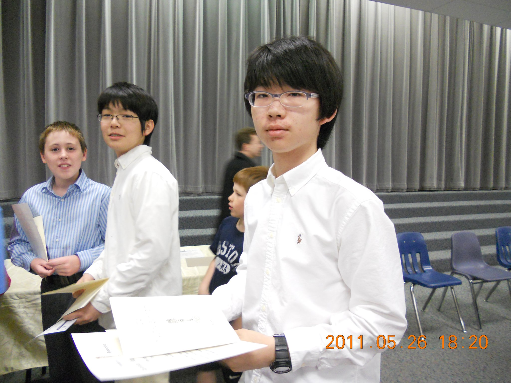
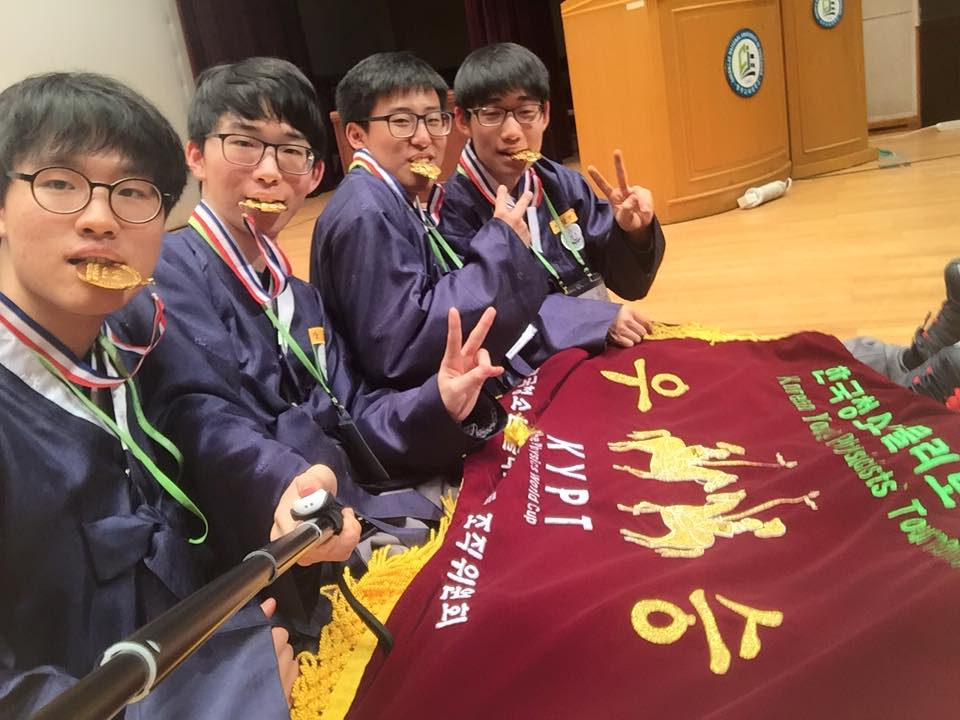
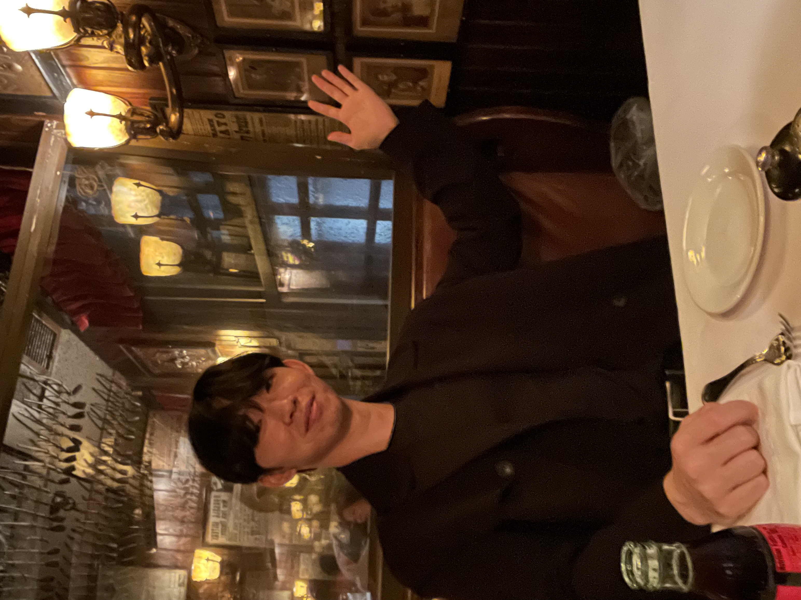

Background
Daniel Wright Junior High (2010-2011)

School Math Team
AMC 8 (School Winner, 98th percentile nationwide)
Stevenson Math Consortium 1st place (team Daniel Wright)
National Junior Honor Society (NJHS)
Northwestern Univeristy Talent Search Program
(NUMATS)
Daecheong Middle School (2012-2013)
Leadership Roles
School News Team
Debate Competitions (Korean and English)
Korean Physics Olympiad (KPhO)

Korean Minjok Leadership Academy (KMLA) (2014-2016)

Physics Team (Wings of Thought, 혜움나래)
Korean Young Physicists' Tournament (KYPT) Grand Prize
Gangwon Science Fair
Minjok Orchestra (Daegeum)
Rowing Team (Captain, cox)
Rube Goldberg Machine Club (ImagiMo)
(Captain, Founder)
KMLA Office of International Affairs
Cornell University (2017-)
School of Arts and Sciences
Double Major in Physics and Information (Data) Science
Dean's List (FA2021, FA2022)
2020 Adelphic Award Nominee
Coding Competitions
2021 Google Kickstart (top 30%)
2021 Facebook Hacker Cup, Round 2 Qualifier (top 8%)
2019 FINA World Aquatics Championship
Interpreter for the national team of Republic of South Africa
Mandatory Military Service (Paju, Korea)
September 2018 ~ April 2020
Squad Leader, Military Engineer
Participated in demining operations on the North Korean Border
